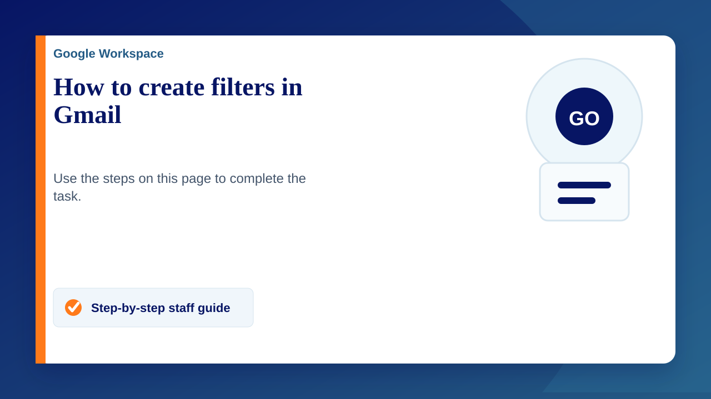

Create a filter
- Open Gmail.
- In the search box at the top, click the Down arrow Down arrow.
- Enter your search criteria. If you want to check that your search worked correctly, see what emails show up by clicking Search.
- At the bottom of the search window, click Create filter.
- Choose what you’d like the filter to do.
- Click Create filter.
Note: When you create a filter to forward messages, only new messages will be affected. In addition, when someone replies to a message that you've filtered, the reply will only be filtered if it meets the same search criteria.
Use a particular message to create a filter
- Open Gmail.
- Tick the box next to the email you want. Click More More.
- Click Filter messages like these.
- Enter your filter criteria.
- Click Create filter.